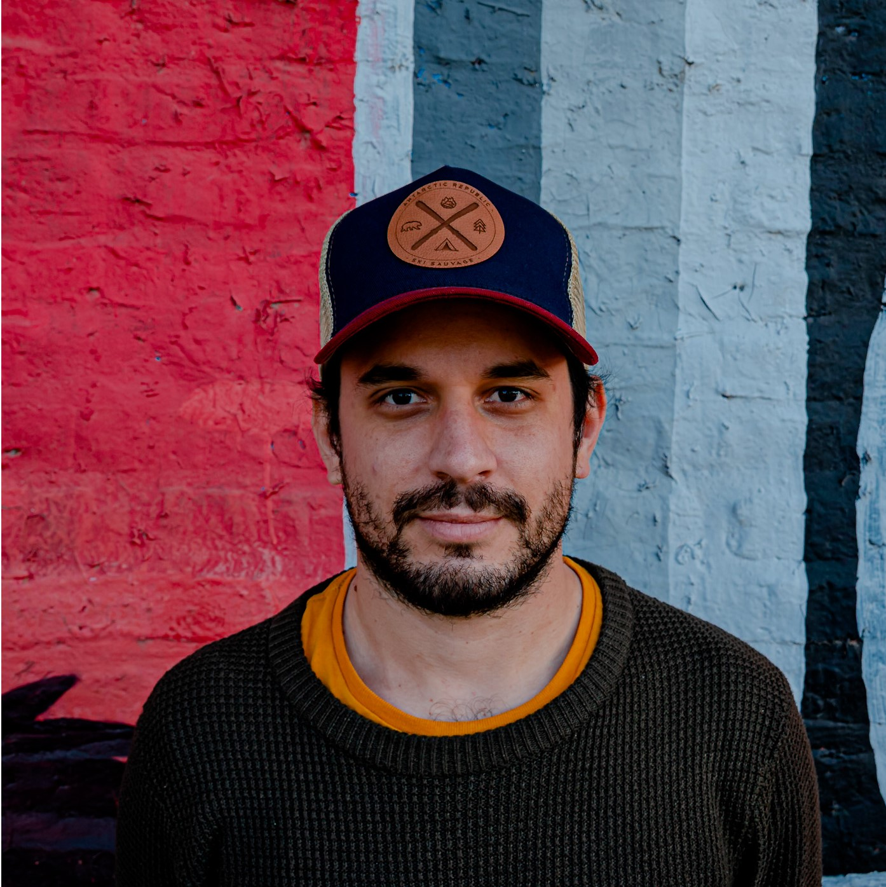

I am an Argentine who traveled with a working holiday visa for 2 years in Australia. During this time, I have explored diverse landscapes and engaged in various water sports, capturing these experiences through my lens. My professional background includes training as a business administrator, with experience at CCU, Lenovo, and Directv. My passion for photography started as a hobby and has now become a significant part of my life. This journey has been a transformative experience, allowing me to blend my business acumen with my creative pursuits.
